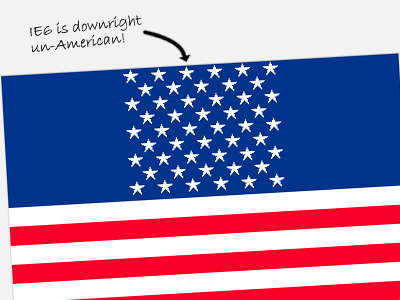

I’d like to wish a very happy 4th of July in advance to all the loyal, lovely, learning readers of CSSnewbie. To celebrate our upcoming Independence Day (because I am a Yankee), I took a bit of time and created the CSS and XHTML USA flag you see above. Visage above is but an image, but here it is again in an iframe so you can see it in action:
And you can click here to see how it’s done (just view the source):
If you like this flag, feel free to copy the source onto your own websites to display your own CSS-based American flag to wow your friends and impress the ladies (or gents, as you prefer). And for a nice extra touch, highlight the flag. You’ll find a hidden message along the right-hand side.
So how is it all done? Read on!
Building the American Flag out of XHTML and CSS
As always, we start with the XHTML. The basic structure is this:
<div id="flag">
<div class="blue">
...stars go here...
</div>
...stripes go here...
</div>
Pretty basic, really. And the stars and stripes themselves are pretty darn easy, too:
<p>★★★★★★</p>
<p>★★★★★</p>
...9 alternating rows of 6 and 5 characters...
Those funny characters in the paragraphs are ANSI character entities. It’s a way of calling on characters that exist in typefaces, but not on your keyboard. The character code above is for a five-pointed star. It should work in nearly every browser on nearly every computer, but I’ve noticed that some (but not all!) installations of Internet Explorer have problems finding the star. If you’d prefer, you could always just use asterisks instead.
<p class="red stripe">Your hidden message</p>
<p class="white stripe">would go in here.</p>
...13 alternating rows of "red" and "white" classed paragraphs...
The stripes are equally simple. Each stripe is a paragraph with a “stripe” class and either a “red” or “white” class, depending on which you want it to be. You’ll need thirteen of them in all, starting and ending on red. And I know I’ve mentioned before that it’s bad practice to name classes according to what they look like instead of what they are, but since this is a purely visual exercise, I think we can let that slide. :)
So let’s move on to the CSS. We’ll start by defining the area around the flag contents:
#flag {
font-family: "Lucida Sans Regular", sans-serif;
width: 398px;
border: 1px solid #ddd;
margin: 0 auto;
position: relative; }
I’ve given the flag an overall width of 400 pixels (398 plus two 1 pixel borders on either side) so that it would fit nicely on most websites, but you could really make it any size you wanted. The margin is just centering the flag: you could remove it if you wanted, and everything would function just fine. The “position: relative” rule is important here, because it allows us to absolutely position elements within our relatively positioned box. And I’ve specified the font-family that I have because it’s one that I know has the star specified in its font file, and I’m hoping that will help Internet Explorer find it more easily. More modern browsers like Firefox and Safari, so far as I can see, tend to find the star character even without this help.
So now that we have an outline, let’s build the blue field and white stars:
.blue {
position: absolute;
top: 0;
left: 0;
width: auto !important;
width: 180px;
background-color: #00348c;
color: #fff;
text-align: center;
padding: 2px 0 5px 8px !important;
padding: 2px 0 5px 0; }
.blue p {
letter-spacing: 12px;
height: 14px;
font-size: 20px;
line-height: 14px;
margin: 0; }
To start, we’re absolutely positioning the area to the top-left corner of our flag. Next, we’re specifying two widths: a width of “auto” that most browsers read, and a specific width for Internet Explorer (which doesn’t understand the !important rule). Without these two rules, most browsers will work just fine, but in IE6 the blue field will take up the entire top 2/3 of our flag. Which, incidentally, creates a pretty cool flag… just not the American one. :)

Next up, we’re specifying a nice deep blue background color, and setting our font color to white. We’re also center aligning the text: this is what allows our alternating-sized rows to align just like the real US flag does. And we’re also applying some padding. Unfortunately, the padding looked a little wonky in IE6 (go figure), so I used the !important rule again to add a unique padding rule for that browser.
In the paragraphs containing the stars, we’ve specified a letter-spacing: this lets us get much more accurate spacing results than if we’d relied on regular spaces or non-breaking spaces ( ) between our stars. Then we specify a height, font-size, and line-height for each of the paragraphs. The height and font-size are the same, to center the star within the paragraph. The font-size is actually larger, however, which allows us to overlay our paragraphs slightly. The result is much more like the star pattern on the real American flag. I’m also setting the margin to zero, because otherwise the default paragraph margin would wreak havoc with our spacing.
Next up, let’s CSS-ify the stripes:
p.stripe {
height: 19px;
font-weight: bold;
text-align: right;
padding: 0 5px;
margin: 0; }
.red {
color: #f70029;
background-color: #f70029; }
.white {
color: #fff;
background-color: #fff; }
Each of the stripes in my example is 19 pixels tall. This is the result of some pretty irregular math that I won’t go into detail about: suffice it to say, the goal is to get the bottom of the blue field to line up with the bottom of the 9th stripe. I’m also applying a boldface, aligning the text to the right, and applying margins and padding. This is all for the “secret” hidden messages inside the stripes. If you’re not including a message in your flag, those rules aren’t necessary and can be trimmed.
After that, we’re styling the red and blue stripes. It’s a simple thing: we’re just setting both the foreground (text) and background colors to the same shade, so that the text is invisible until it’s highlighted.
And finally, I added a few special rules just for the highlighted text:
.red::-moz-selection {
color: #fff;
background-color: #f70029; }
.red::selection {
color: #fff;
background-color: #f70029; }
.white::-moz-selection {
color: #000;
background-color: #fff; }
.white::selection {
color: #000;
background-color: #fff; }
These are advanced selectors that don’t work on every browser, but I think it’s a nice effect for those that do (like Firefox and Safari). What we’re doing is modifying the color of the selected text from the browser defaults to new variables. On the red stripes, we’re setting the background color to the same red shade as the stripes themselves and turning the text white. On the white stripes, we’re going with a white highlight and black text. The result is that the viewer never actually sees the “highlighted” background color: they just see the text magically appear when they select the flag.
And voila! You’ve built an American flag out of XHTML and CSS. That should be good for at least one free beer at your friend’s barbeque this weekend. You can click here to see it in action again:
If you do use this anywhere, drop me a line in the comments. I’d love to see it in action!
Pingback: Patriotic CSS
nice…
my small example… (use ctrl+scroll in FireFox)
http://users.cosmostv.by/rmaksim/coding/webcom/webcom.html
I can’t see the point!
Css is not for creating graphic elements but for applying style to content and layout.
What kind of information will a search engine get from your flag? And what about someone with visual impairment?
Martin, you need a sense of humour transplant !
However…for me, in FF3 the stars don’t look like stars, more like space invaders. Similar in IE7 (sort of inverted ‘U’).
instead of star i see;
25
06
seems like a character issue to me.
Martin: Agreed… this isn’t what CSS is supposed to be used for. Instead, it’s just having a little fun. But don’t worry: the text I’ve hidden inside the flag will still show up in search engines, and will be visible to those with visual impairment. So they’ll get ~something~ out of it. :)
Tim, V1: That seems to happen occasionally for some people. Like I said in the tutorial, if you’re looking for greater compatibility (albeit with less accuracy), I’d suggest using asterisks instead of the stars.
Pingback: Creando una bandera americana con css y xhtml | Uno de los otros
Great article, and a great source of inspiration.
Martin: Don’t worry about it, it may not be what CSS is for, but it shows what CSS can do, and its a great example of creative thinking.
I wonder if the stars issue is a Windows thing. They display just fine in FF3, FF2, Safari 3.1 and Opera 9.5 on Mac OS 10.4
Happy 4th of July!
Rob, thanks!
Pingback: independence day
I also did the American flag in CSS to celebrate the 4th. You check it out at: http://christopherschmitt.com/2008/07/03/american-flag-in-css/
Pingback: Bookmarks about Xhtml
Pingback: 網站製作學習誌 » [Web] 連結分享